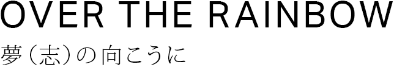
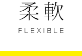

私たちは、企業人である前に人である。
人として誠実に向き合い、利他の精神で励む。
その、あたりまえの姿勢が夢（志）を共にする第一歩。
私たちは、夢（志）をもって挑戦する人を支え続ける存在でありたい。
同志として新しい価値を創造し、感動＝幸せを提供する。
共に挑戦させていただくことで私たちも成長する。
その繰り返しが、互いを成長させる。
私たちが誇れる未来は、夢（志）の向こうにある。
JAZY GROUP
代表 彦田 和詳

それぞれが持つ個性は様々であり、組織としては多様である方が好ましい。
異なる個性が同じベクトルで融合したとき、新たな価値が生まれると考えています。
私たちは、JAZY GROUPの一員として、以下のことを大切にしています。
大切にする７つの感性

- 


行動指針
自分らしくポジティブに楽しもう。
受け入れて柔軟に変わろう。
何事もバランスをとろう。
常に誠実に、誰よりも緻密に。
気品高く、誇りをもって。
JAZY QUALITY
神は細部に宿る、と言います。
細部にまで想いを込めて創り上げることで生まれてくる
本質的な世界観・価値観があります。
“JAZY QUALITY”は、
その世界観・価値観で感動を生みだすことを目指しています。

私たちは多様化するニーズにお応えするべく、６つのソリューションを組み合わせてご提供しています。
経営者の意志を具現化する為、知財及びブランディング戦略からWEBマーケティング、WEB制作の戦術まで、
勝ち抜くための総合サポートをしています。ITを活用した地域創生ソリューションにも注力しています。
-

知的財産 - 豊富な経験と業界TOPクラスの実績。知財（商標、特許、実用新案、意匠）の権利化から知財を経営に活かすコンサルまで、知財戦略について専門的で幅広いサポートをいたします。
-
ブランディング - 伝えたい方に、分かりやすく伝える。CI ・VI構築、経営・企画支援など、事業を効果的・能率的に進めるためのブランディングを行い、ブランド価値を高めます。
-
グラフィックデザイン - 想いをカタチに。コーポレートマーク、ロゴマークのデザイン、名刺やパンフレットのデザイン、出版物の制作など、デザインが持つ力で新たな世界観を創り上げます。
-

WEBマーケティング - 経営にインパクトを与えるWEB集客力は緻密な分析から。WEB検索市場（ビッグデータ）の分析、WEBサイト流入分析、SEM・SEO対策により、WEB集客力を飛躍的に高めます。
-
WEB制作 - WEB制作は目的を明確に。ブランディングサイト（コーポレート・製品サイト等）の制作から集客サイト（LP・EC・プロモーション等）の制作まで、WEB制作を戦略的にサポートいたします。
-

地方創生 - 地方創生は地域を愛する心から。地域ブランディングを目的とした地域WEBプラットフォームを構築し、地域に息づく人々の物語を発信することで地域活性化をサポートをしています。
JAZY GROUPは、新しい価値を創造し、感動＝幸せを提供し続ける企業グループを目指しています。
企業にとっても、地域にとっても、希望の種を掘り起こし、新しい価値を創造することから未来が開けると思っています。
私たちは、夢（志）をもって挑戦する人を支え続ける存在でありたい、と考えています。
- CEO（最高経営責任者）
- 彦田 和詳
- OFFICER（執行役員）
- 天羽 優太
- OFFICER（執行役員）
- 榊原 直也
- OFFICER（執行役員）
- 渡邊 功
グループ企業概要
JAZYブランディング株式会社
- 代表取締役
- 彦田 和詳
- 設立
- 2009年4月
- 資本金
- 3000万円
- サービス
- ブランディング、クリエイティブデザイン、WEBマーケティング、WEB制作等
- 所在地
- 〒107-0052 東京都港区赤坂6-18-11 ストーリア赤坂407号
- TEL
- 03-3560-2224
- info@jazy.co.jp
特許業務法人JAZY国際特許事務所
- 代表社員
- 加藤 恭
- 設立
- 2005年12月
- サービス
- 知的財産コンサル、商標登録出願・特許出願・意匠登録出願・実用新案登録出願の代理及びそれに付随する業務
- 本社所在地
- 〒107-0052 東京都港区赤坂6-18-11 ストーリア赤坂407号
- TEL
- 03-3560-2223
- SO所在地
- [ 神山サテライト・オフィス所在地 ]
〒771-3421 徳島県名西郡神山町下分字地野49-1（神山バレー・サテライトオフィス・コンプレックス内） - info@jazy.co.jp
一般社団法人ニッポニア・ニッポン
- 代表理事
- 彦田 和詳
- 設立
- 2012年6月
- 活動理念
- 地域パラダイムシフト（価値観の変換）を提言し、豊かな地域社会の実現を目指す
- 活動内容
- 地域創生（地域ブランディング支援、地域WEBサイト構築ならびに情報発信支援など）
- 活動実績
- 広島県（鞆の浦）、福島県（会津）、香川県（小豆島）、東京都（国分寺） 2014.12現在。
- 所在地
- 〒107-0052 東京都港区赤坂6-18-11 ストーリア赤坂407号
- TEL
- 03-3560-2225
- info@nipponianippon.jp
アクセス
〒107-0052 東京都港区赤坂6-18-11 ストーリア407号
仲間を大切にする人
仕事の付き合いの前に、人としての付き合いが大切です。仕事の仲間と共有する時間は、
家族と共有する時間よりも多くなるかもしれません。仕事の仲間と楽しく充実した時間を過ごすことは、
豊かな人生を育みます。
誠実な人
人に対して、仕事に対して誠実に向き合うことは大切です。誠実さが信用に繋がり、
その信用が次のチャンスを引き寄せ、自己のフィールドを大きくしていきます。
創造力あふれる人
どの業界においても、商習慣やサービスモデルなど“常識”が存在し、殆どの企業はその常識の中で仕事をしています。
その常識に問題意識を持ち、新しい価値を創造し続けることが、明るい未来の創造に繫がると考えています。
プロ意識をもっている人
プロ意識がない人に、成長はありません。意識は行動を変え、行動は習慣となり、習慣は人格をつくります。
誰よりも熱意をもって深く追求する意欲、姿勢が、JAZY QUALITYへと繫がります。
社会貢献意識がある人
企業として利益を追求する事は当然ですが、その先に“人類のため、社会のため、地球のため”という意識を持つことで、
そこに意義を感じることができます。また、企業活動が同時に社会活動に繋がっていると、
人は本能的なやりがいを感じることができます。JAZY GROUPでは、地域創生事業も行っており、
社会貢献意識の高い人を求めています。
ご応募について
JAZY GROUPでは、それぞれの企業にて採用活動を行っております。
まずはお気軽にお問い合わせいただけますと幸いです。
- JAZYブランディング株式会社
- info@jazy.co.jp
- 特許業務法人JAZY国際特許事務所
- info@jazy.co.jp
- 一般社団法人ニッポニア・ニッポン
- info@nipponianippon.jp